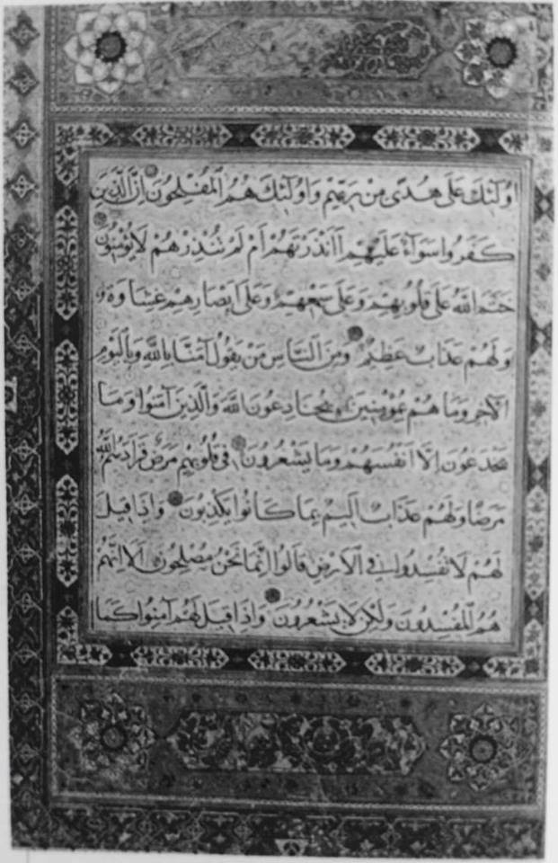

Mohamed je želel izboljšati položaj žensk v družbi. Prizadeval si je za večje enakopravnost med spoloma. Ženskam je celo namenil poglavje v Koranu. Ta pogled na svet, način razmišljanja, je bil za moške tistega časa velika novost. Koranske reforme so zelo izboljšale položaj žensk. Koran dopušča enakopravnost žensk glede državljanskih pravic: hčerke so dobile pravico do dedovanja polovičnega deleža sinov (stoletja pred zahodnimi ženskami) in prepovedali so detomor. Zakonsko zvezo so razglasili za sveto, kar pomeni, da mora ženska sama pristati na poroko. Tako so utrdili zakonske vezi in prepovedali poroko s krvnimi sorodniki.
